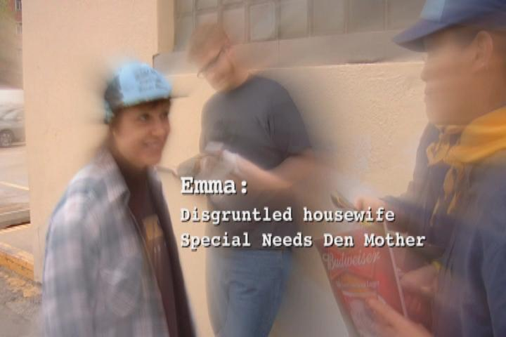

Bits of Dodgeville
Greetings fans! As you may have read on this very site, Carol appeared as Emma Sweet in the pilot episode of Dodgeville.

Last month, we had the pleasure of seeing the final cut at the premiere cast party! Now, for your viewing pleasure, here are a few clips of Carol's appearances...
**
**
- *
Originally published on the Blogspot site